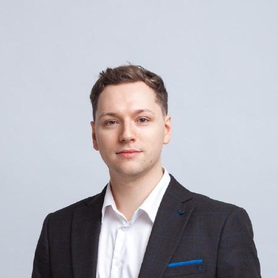
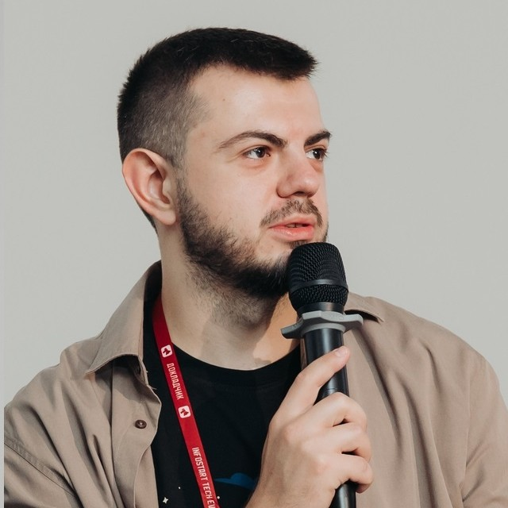
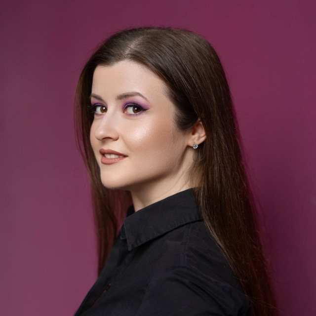
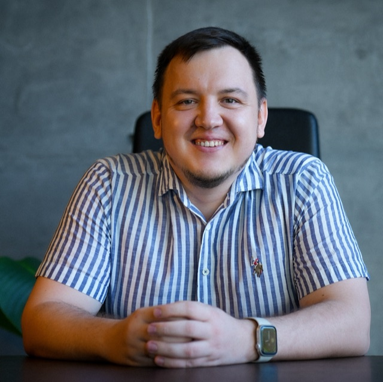

Разметку ландшафта помогают выверять эксперты сообщества 1С. Каждый отвечает за свое направление и проверяет, насколько корректно инструменты представлены в своей области. Это позволяет опираться не на мнение одного человека, а на опыт специалистов из разных сфер

Матвей Серегин
Популяризатор технической экспертизы, преподаватель, наставник. Отвечает за технологическое развитие программ самой крупной сети партнеров по аутсорсингу бухгалтерского учета и отчетности
Помимо основной деятельности активно занимается просветительской деятельностью. Преподает разработку на 1С в САФУ (г. Архангельск), ВШЭ (г. Москва), МФТИ (г. Москва), в УЦ1 Фирмы «1С» и в Нетологии
Игорь Апресов
Инженер и архитектор с опытом решения сложных проблем. Наставник, обучает и развивает специалистов. Специалист по защите информации
Работал в фирме «1С», где разрабатывал БСП и стандарты. Проектировал библиотеки для работы с искусственным интеллектом
Telegram «Radio Ingvar» ↗︎
Евгений Акпаев
Разработчик на 1С:Предприятие и .NET, автор OneSwiss — открытого комплекса мониторинга и обслуживания баз 1С. В фокусе — администрирование, СУБД и производительность
GitHub @akpaevj ↗︎
Дмитрий Абрамов
Руководитель проектов разработки коробочных продуктов. Автор opensource-проектов для 1С: sonarqube-for-1c, redis 1c addin, подсистема кэширования, bellerage-ssl
Эксперт в области интеграционных решений с 1С: корпоративные веб-порталы, веб/мобильные технологии, шины данных
GitHub @Daabramov ↗︎
Татьяна Головкина
Руководитель группы тестирования 1С в Ozon. Собрала команду QA-инженеров и выстроила систему тестирования с нуля: регламенты, правила, инструменты и практики
Telegram «Будни 1С QA» ↗︎
Александр Кунташов
Разработчик в Инфостарте, давний участник open-source сообщества 1С: OneScript, Vanessa Automation, инструменты автотестирования. Пишет про разработку, тестирование и DevOps в 1С
GitHub @kuntashov ↗︎ Telegram «Про 1С и не только» ↗︎
Роман Данилов
Аналитик 1С с финансовым бэкграундом в производственных, строительных и розничных отраслях. Сейчас — руководитель команды разработки
Telegram «Путь аналитика» ↗︎
Мария Серегина
Лид аналитиков кластера 1С в компании ФинТехРобот, 12 лет в сфере ИТ. Ведущая подкастов Радио «Аналитик» и «Про менеджмент»
Преподаватель курсов по анализу и моделированию бизнес-процессов, проектированию пользовательского взаимодействия, работе с требованиями. Модератор и спикер конференций INFOSTART; спикер PeopleSense, Analyst Days, ЛАФ и Желтой Субмарины
Telegram «Вне эфира с Марией Серегиной» ↗︎
Никита Арипов
Эксперт с более чем 15-летним опытом разработки и внедрения решений на платформе 1С. Постоянный спикер профессиональных конференций
Telegram «Никита Арипов | 1C, DevExp» ↗︎